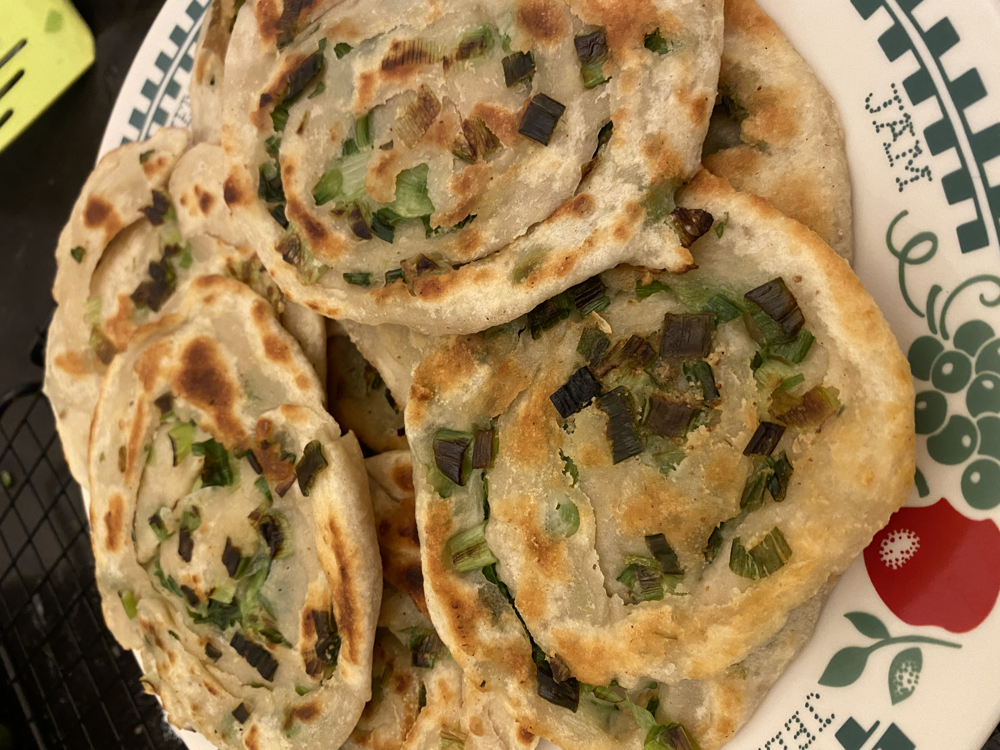

Home
Scallion Pancakes

Description
Scallion pancakes, aka green onion pancakes/spring onion pancakes, are a type of pan-fried pastry flavoured with chopped scallions, salt and spices. They are a traditional home-cooked dish in northern China and are also widely available in restaurants and street stalls nationwide.
Although referred to as pancakes in English, they are very different from Western-type pancakes. Instead of a batter, they’re made from a simple flour-water dough with a savoury filling between the layers.
Ingredients
- 2 cups all-purpose flour
- 1/2 teaspoon salt
- 1/2 cup boiling water
- 1/4 cup cool water
- 1/4 cup + 2 tablespoons all-purpose flour
- 1/4 cup coconut oil
- 3/4 teaspoon salt
- 1/4 teaspoon ground Sichuan pepper - or Chinese five-spice powder
- 8 to 10 green onions , split down the middle and chopped (yield 1 cup)
- Vegetable oil for pan frying
- 1 1/2 tablespoon soy sauce
- 1 tablespoon Chinkiang vinegar
- 1/4 teaspoon sugar
Steps
- Combine the flour and salt in a big bowl. Stir to mix well. Slowly drizzle in the hot water while mixing it with a pair of chopsticks (or a fork), until the water is fully absorbed. Slowly drizzle in the cool water, continuing to stir until many dough flakes form. Press the dough together, and try to combine the wet dough with the dry flour. Drizzle in a little extra water if there is any dry flour remaining. Knead until a firm ball is formed, about 5 minutes. Cover and let rest for 20 minutes.
- While the dough is resting, combine the flour, oil, salt, and pepper/powder in a small bowl. Mix until a smooth paste is formed.
If making the dipping sauce, combine soy sauce, vinegar, and sugar with 1 tablespoon of water in a small bowl and mix until the sugar is dissolved.
- When the dough is done resting, knead for another minute until it is smooth. Cut the dough into 6 even pieces, about 76 grams per piece. Form the dough into balls using your hands.
- Work on one dough ball at a time, covering the rest with plastic wrap to prevent drying out. Roll each dough ball into a thin rectangle with a rolling pin, aiming for around 6×10” (15×25 cm). Lift and turn the dough regularly as you roll it to prevent sticking. Spoon about 1 tablespoon of the filling onto the dough and spread it evenly with the back of a spoon, leaving about 1” (2.5 cm) on top and the left end without the filling. Sprinkle 2 heaping tablespoons of green onions onto the paste, concentrating most of it towards one side of the length and one side of the width, creating a loose L shape.
- Begin rolling the dough from the longer side of the dough where the green onions are concentrated, until you have one long tube. Lightly flatten the tube using your hand. Pinch the side with more green onion to seal it. Take the sealed side and gently pull and roll it towards the unsealed side, using your hand to smooth out the dough to push any large air bubbles out. Tuck the loose end under the rolled bun. Gently press down on the round disk with your hand to seal the pancake.
- Set the formed pancake aside and cover it with plastic wrap. Repeat steps 4 and 5 until each pancake is ready.
- Roll each prepared pancake into a circle, about 7-8” (17-20 cm) wide. Flip and move it as you do to prevent sticking. Don’t worry if air bubbles burst through or some green onions fall out.
- Heat a 9” (23 cm) cast iron pan (or a nonstick skillet) over medium-high heat and add enough oil to fully coat the bottom. Once the oil is hot, add a pancake. Use a pair of chopsticks (or a spatula) to swirl the pancake around to spread the oil and prevent sticking, for a few seconds. Cover the pan and turn the heat down to medium. Let the pancake cook, covered, for 1 minute. Remove the lid and flip the pancake, cover, and cook for another minute. Remove the lid. Use a spatula to press the pancake, to ensure even browning. Continue to cook, flipping regularly, until both sides are crisp and browned, about 3 minutes. Turn to medium-low heat if the pan gets too hot. Transfer the pancake to a cooling rack or a cutting board to cool. Repeat to cook all the pancakes you plan to serve.
- Once the pancakes are slightly cooled enough to handle, cut into 6 pieces and transfer to a serving platter. Serve hot with the dipping sauce as an appetizer.